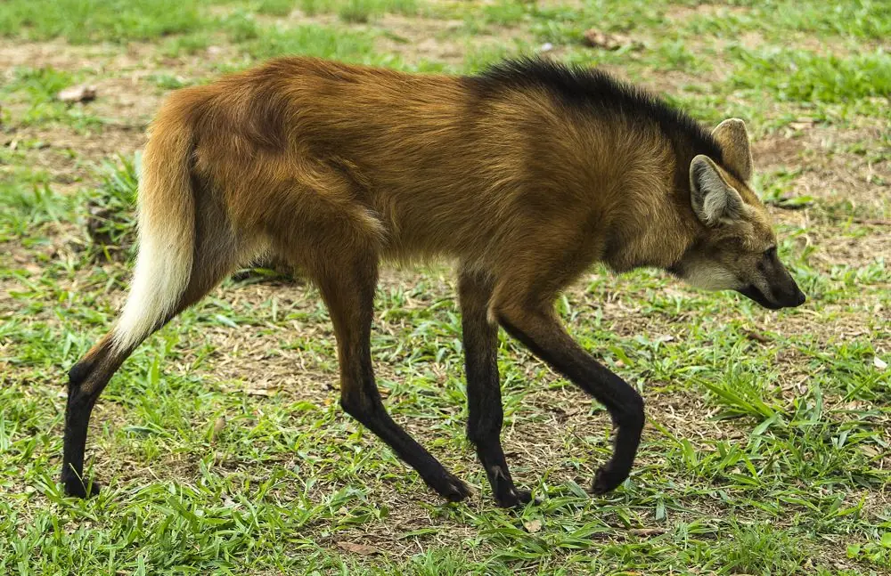
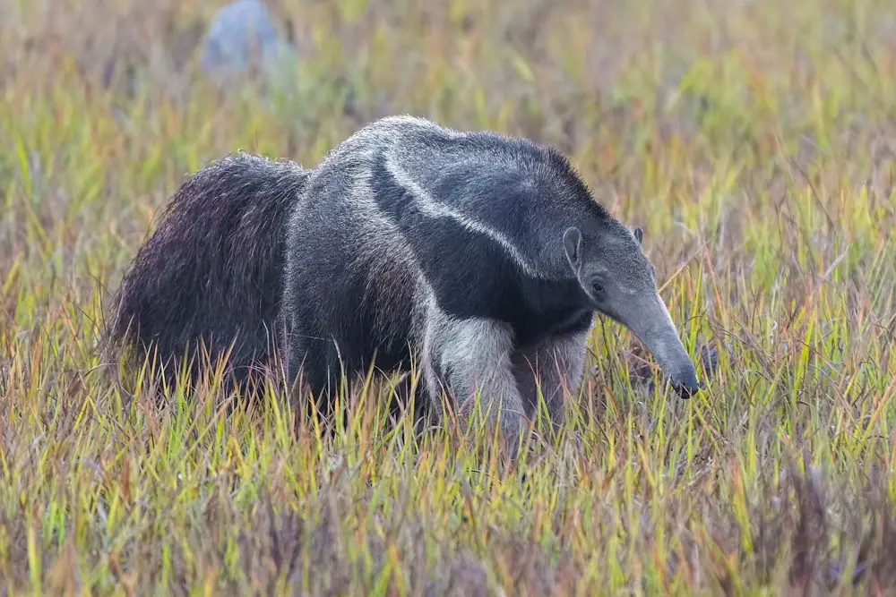
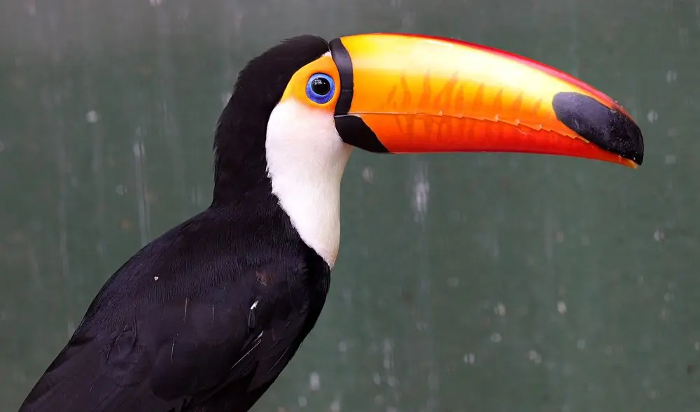

Chapada dos Veadeiros (GO)
Campos rupestres e veredas; o melhor horário para o lobo-guará é ao entardecer.
- Duração
- 3 dias
- Melhor época
- Junho a setembro (seca)
- Grupo
- até 8 pessoas
Saídas fotográficas em unidades de conservação do cerrado, sempre com guia local e regras de observação responsável.

Campos rupestres e veredas; o melhor horário para o lobo-guará é ao entardecer.

Grandes áreas de campo aberto, onde o tamanduá-bandeira é visto com frequência.

Saída curta para principiantes, com trilhos planos e muitas aves perto da água.
Não. Um telemóvel com zoom já faz boas fotografias de aves perto da água, e o guia ajuda com a luz e o enquadramento. Quem tem câmara pode trazer uma objetiva de 300 mm ou mais.
Roupa de cores neutras, chapéu, protetor solar, repelente, garrafa de água e uma lanterna de luz vermelha para o fim da tarde.
Na saída de um dia no Parque Nacional de Brasília, sim, a partir dos 10 anos e com um responsável. As expedições mais longas são a partir dos 16 anos.
Com chuva fraca a saída mantém-se: muitos animais aparecem logo a seguir. Com tempestade, remarcamos sem custos.